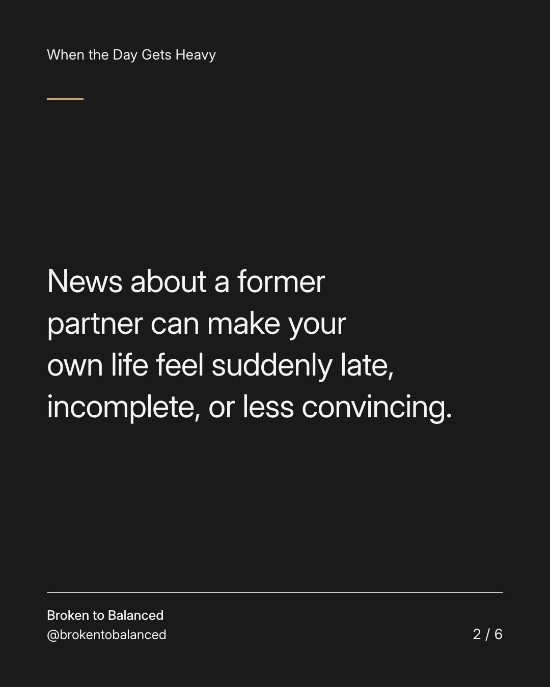
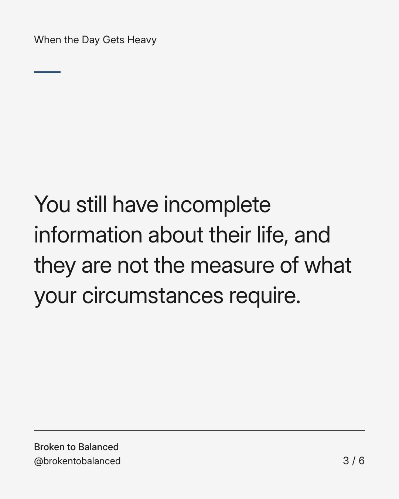
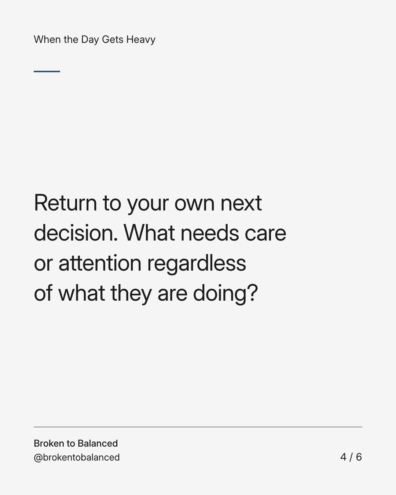
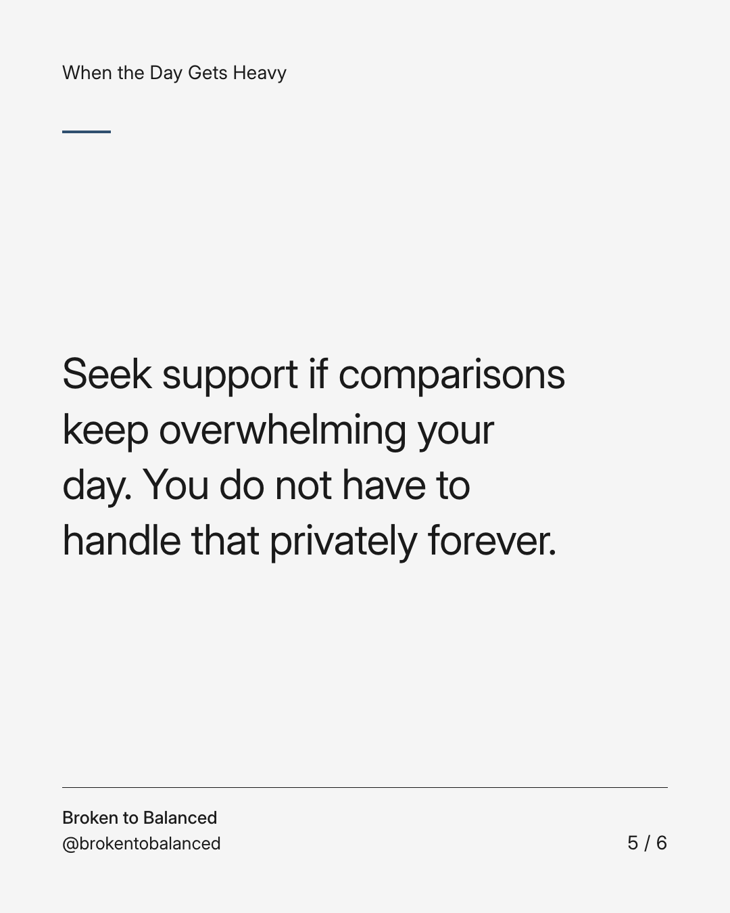
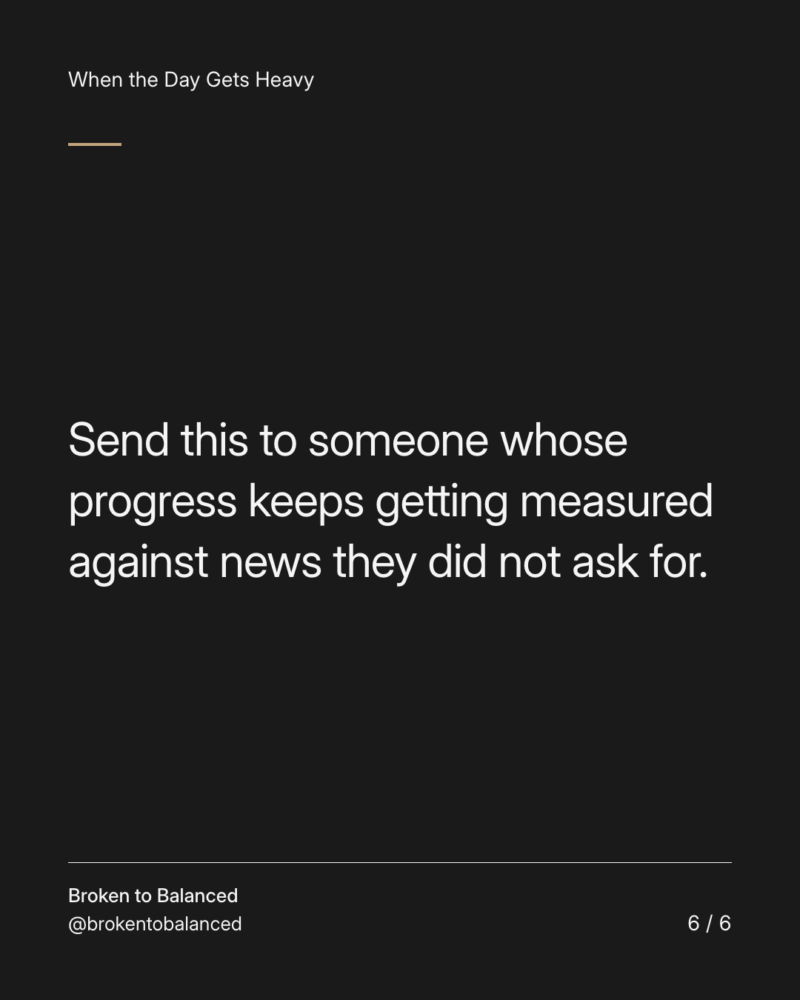

Exact text and accessibility text
Someone else's new chapter is not a verdict on your pace.
Slide 1 of 6. Someone else's new chapter is not a verdict on your pace.


Exact text and accessibility text
News about a former partner can make your own life feel suddenly late, incomplete, or less convincing.
Slide 2 of 6. News about a former partner can make your own life feel suddenly late, incomplete, or less convincing.


Exact text and accessibility text
You still have incomplete information about their life, and they are not the measure of what your circumstances require.
Slide 3 of 6. You still have incomplete information about their life, and they are not the measure of what your circumstances require.


Exact text and accessibility text
Return to your own next decision. What needs care or attention regardless of what they are doing?
Slide 4 of 6. Return to your own next decision. What needs care or attention regardless of what they are doing?


Exact text and accessibility text
Seek support if comparisons keep overwhelming your day. You do not have to handle that privately forever.
Slide 5 of 6. Seek support if comparisons keep overwhelming your day. You do not have to handle that privately forever.


Exact text and accessibility text
Send this to someone whose progress keeps getting measured against news they did not ask for.
Slide 6 of 6. Send this to someone whose progress keeps getting measured against news they did not ask for.
Exact caption
Plain-text fallback: select and copy the caption.